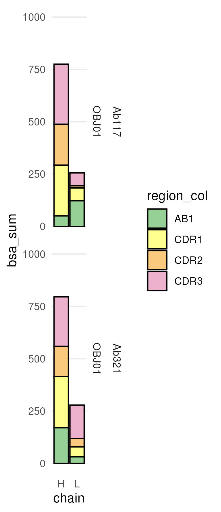
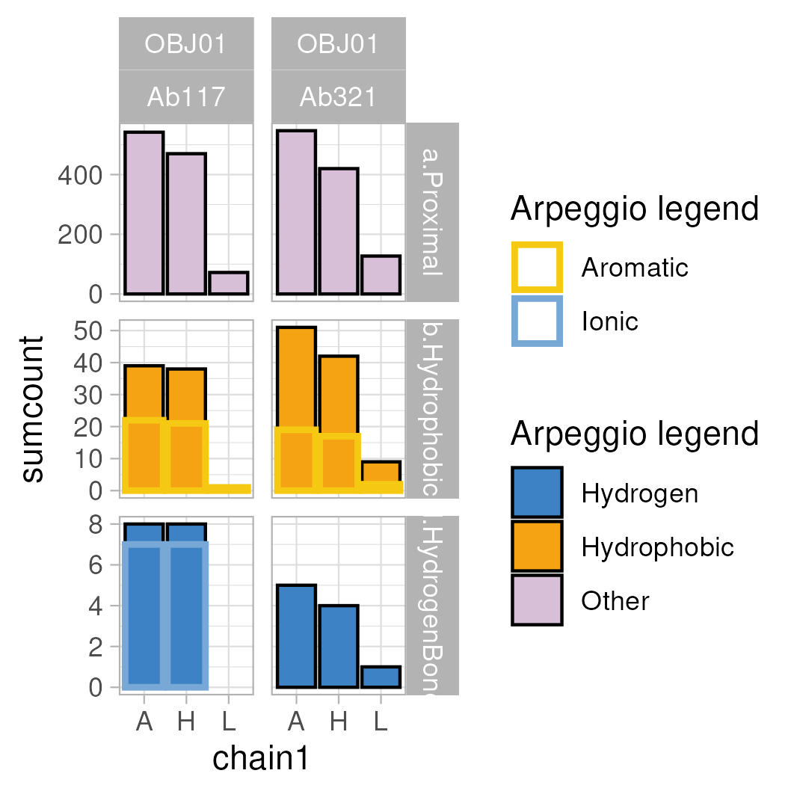
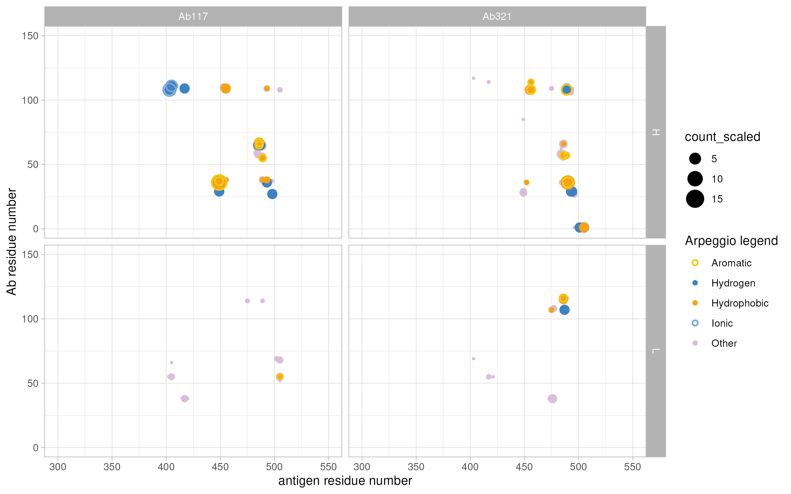

# Initialize renv at the root:
renv::init()
# Install all packages needed by both projects
renv::install("tidyverse")
renv::install("xml2")
renv::install("DT")
renv::install("vroom")
renv::install("ggsci")
renv::install("kableExtra")
renv::install("ggforce")
renv::install("egg")
renv::install("ggpubr")
renv::install("datapasta")
renv::install("officer")
renv::install("formattable")
renv::install("bio3d")
renv::install("statip")
renv::install("boot")
renv::install("cluster")
renv::install("htmlwidgets")
renv::install("lattice")
renv::install("MASS")
renv::install("Matrix")
renv::install("mgcv")
renv::install("nlme")
renv::install("nnet")
renv::install("promises")
renv::install("Rcpp")
renv::install("rpart")
renv::install("survival")
renv::install("zip")
renv::install("cowplot")
renv::install("plotly")
# Take a snapshot
renv::snapshot()index
Custom visualization of Ab/antigen interactions by tidying PISA and Arpeggio outputs in R and PyMol
The auxiliary scripts NBIS_M_Ohlin_2411_Ab321 and NBIS_M_Ohlin_2411_Ab117 were used to analyze the Ab321/RBD and Ab117/RBD interfaces, as presented in our publication, and also compared to the ACE2/RBD interface.
The scripts are work in progress, but provide a framework to analyze and visualize antigen/antibody interactions. If you know R and PyMol you could extend this script to other outputs, also consider AI tools. Or you could also transform this into a more automated solution. Examples exist for PyMol embedded code/analysis within Jupyter notebooks.
These scripts are combined with respective PyMol sessions, listed in respective PyMOL_session folders to streamline the analysis. Check the pml files (ASCII text), and copy commands scene-by-scene to move forward in PyMol. A break indicates when it´s time to create output from PISA or Arpeggio webservers. These outputs are imported to create summary boxplot visualizations of interaction surfaces, as well as additional PyMOl scripts used in the main PyMOL session scripts.
The PyMOL commands OBJ01.pml can be found in the PyMOL_session folder. The PDB OBJ01_Ab321_aligned.pdb corresponds to the deposited PDB: 9TK0, but is aligned with the Ab117/RBD interface for visualization purposes. The PDB OBJ00_ACE2_aligned.pdb corresponds to the deposited PDB: 7A94 displaying the RBD/ACE2 complex.
Check the text file, and copy commands scene-by-scene to move forward. A break is noted in the script to indicate when it´s time to create output from PISA or Arpeggio webservers. These outputs are imported to create summary boxplot visualizations of interaction surfaces, as well as custom auxiliary PyMol visualization scripts.
The scripts have been tested with these deposited PDB files of the two Abs:
- Ab117 with PDB code 9IB1
- Ab321 with PDB code 9TK0; Note: not released yet.
- ACE2 with PDB code 7A94
Setup to run the analysis
This setup was created for an interactive Work in RStudio with a shared renv package management. This analysis was run using Docker/tidyverse.
sudo docker run -d --name NBIS_M_Ohlin_2411_interface_analysis_PDBdeposited -e PASSWORD=XXX --mount type=bind,src=/media/timschu/tims_data/projects/202411_M_Ohlin_2411/git/NBIS_M_Ohlin_241 1_interface_analysis_PDBdeposited,dst=/home/rstudio/NBIS_M_Ohlin_2411_interface_analysis_PDBdeposited -dit -p 8787:8787 rocker/tidyverse
and RStudio project files were created in each subfolder.
cp NBIS_M_Ohlin_2411_interface_analysis_PDBdeposited.Rproj NBIS_M_Ohlin_2411_Ab117/NBIS_M_Ohlin_2411_Ab117.Rproj
cp NBIS_M_Ohlin_2411_interface_analysis_PDBdeposited.Rproj NBIS_M_Ohlin_2411_Ab321/NBIS_M_Ohlin_2411_Ab321.RprojRun the next code chunk to initialize renv and install the packages.
Keeping Multiple .Rproj Files
combined-site/ ├── combined-site.Rproj # NEW: Main project ├── _quarto.yml ├── renv/ ├── renv.lock ├── .Rprofile # source(“renv/activate.R”) ├── project-a/ │ ├── project-a.Rproj # Can keep for reference │ └── [files] └── project-b/ ├── project-b.Rproj # Can keep for reference └── [files]
Combined plots
The combined plots can only be run after analysis of the sub-folders.
Load libraries
library(tidyverse)
library(xml2)
library(DT)
library(vroom)
library(ggsci)
library(kableExtra)
library(ggforce)
library(egg)
library(ggpubr)
library(datapasta)
library(officer)
library(formattable)
library(bio3d)
library(statip)
library(cowplot)
library(plotly)Load the exported plots to combine them.
combine_plots_f <- function(data){
data_out <- data %>% pivot_wider(., names_from = "sample", values_from="plotted")
}
plot_list = list.files(path = "./", pattern = "pisa_ligand_plot_2_pre.rds|feature_contacts_boxplot_sum_pre.rds|feature_contacts_residue_contactplot_pre.rds|pisa_ligand_plot_1_pre.rds", recursive = TRUE, include.dirs = TRUE, full.names = TRUE)
plot_list_all.tib <- as_tibble(plot_list) %>% separate(., value, into = c("dot", "empty", "foldername", "plotname"), sep = "\\/", remove = FALSE) %>% dplyr::select(., !c("dot", "empty")) %>% separate(., foldername, into = c("NBIS", "pre", "Name", "Date", "sample"), sep = "_") %>% dplyr::select(., c("value", "sample", "plotname")) %>% dplyr::mutate(., plottype = str_remove(plotname, "\\.rds")) %>% dplyr::select(., !c("plotname")) %>% dplyr::mutate(., data = purrr::map(value, ~readRDS(.))) %>% dplyr::select(., !c("value")) Filter out reference sample
plot_list.tib <- plot_list_all.tib %>% dplyr::filter(., sample != "ACE2")To define coloring schemes
#region_colors
region_colors.tib <- tribble(~name, ~value,
"CDR1", "#FFFF8F",
"CDR2", "#FBC97D",
"CDR3", "#ECB1CD",
#"Sa", "#00FAFA",
#"Sb", "#0000D4",
"ACE", "#0035D6",
#"Ca2", "#E07B21",
#"Cb", "#E472E4",
"other", "#FFFFFF",
"SPIKE", "#FFFFFF",
"FR", "#96D096",
"AB1", "#96D096")
region_colors <- region_colors.tib %>% deframe()
#https://almerja.com/reading.php?idm=76110 basically Lehningeryrb_yellow <- rgb(245, 163, 19, maxColorValue = 255, name = "yrb_yellow") %>% enframe() %>% pull(value)
yrb_lyellow <- rgb(245, 201, 19, maxColorValue = 255, name = "yrb_lyellow") %>% enframe() %>% pull(value)
yrb_l2yellow <- rgb(245, 239, 19, maxColorValue = 255, name = "yrb_l2yellow") %>% enframe() %>% pull(value)
yrb_red <- rgb(241, 98, 99, maxColorValue = 255, name = "yrb_red") %>% enframe() %>% pull(value)
yrb_lred <- rgb(247, 168, 169,maxColorValue = 255, name = "yrb_lred") %>% enframe() %>% pull(value)
yrb_blue <- rgb(61, 130, 196, maxColorValue = 255, name = "yrb_blue") %>% enframe() %>% pull(value)
yrb_lblue <- rgb(120, 168, 214, maxColorValue = 255, name = "yrb_lblue") %>% enframe() %>% pull(value)
yrb_neutral <- rgb(216, 191, 216, maxColorValue = 255, name = "yrb_tan") %>% enframe() %>% pull(value) #col2rgb("tan")
yrb_pisa <- rgb(202, 125, 204, maxColorValue = 255, name = "yrb_pisa") %>% enframe() %>% pull(value) #col2rgb("tan")
arpeggio_sort_tribble <- tribble(~PIC_type, ~PIC_gencolor, ~PIC_typecolor,
"Hydrophobic", yrb_yellow, yrb_yellow,
"Hydrogen", yrb_blue, yrb_blue,
"Ionic", yrb_blue, yrb_lblue,
"Aromatic", yrb_yellow, yrb_lyellow,
"Cation-Pi", yrb_yellow, yrb_l2yellow,
"Other", yrb_neutral, yrb_neutral)
arpeggio_coltribble <- arpeggio_sort_tribble
arpeggio_assign_color <- arpeggio_coltribble %>% dplyr::mutate(., name = PIC_type)%>% dplyr::group_by(., name) %>% dplyr::summarize() %>% dplyr::mutate(., PIC_type = case_when(name == "Carbonyl" ~ "Other", name == "HydrogenBond" ~ "Hydrogen", name == "Polar" ~ "Hydrogen", name == "Proximal" ~ "Other", name == "VdW" ~ "Other", name == "vdW_Clash" ~ "Other", name == "weakHydrogenBond" ~ "Other", name == "WeakPolar" ~ "Other", TRUE ~ name)) %>% left_join(., arpeggio_coltribble) %>% dplyr::mutate(., priority = case_when(name == "Proximal" ~ "a", name == "Hydrophobic" ~ "b", name == "Aromatic" ~ "c", name == "HydrogenBond" ~ "d", name == "Ionic" ~ "e", name == "Polar" ~ "f", name == "weakHydrogenBond" ~ "g", name == "WeakPolar" ~ "h", name == "Carbonyl" ~ "i", name == "WeakPolar" ~ "j", TRUE ~ "k")) %>% unite(., col = "name_priority", c("priority", "name"), sep = ".", remove = FALSE) %>% dplyr::mutate(., facetPIC = case_when(name_priority == "c.Aromatic" ~ "b.Hydrophobic", name_priority == "e.Ionic" ~ "d.HydrogenBond", TRUE ~ name_priority)) %>% dplyr::mutate(., filled = case_when(PIC_type == "Aromatic" ~ "N", PIC_type == "Other" ~ "Y", PIC_type == "Ionic" & name == "Ionic" ~ "N", PIC_type == "Ionic" & name == "HydrogenBond" ~ "Y", PIC_type == "Hydrophobic" ~ "Y", PIC_type == "Hydrogen" ~ "Y"))
arpeggio_assign_color_col <- arpeggio_assign_color %>% dplyr::mutate(., name = PIC_type) %>% dplyr::select(., name, PIC_typecolor) %>% deframe(.)The plots
pisa_ligand_plot_1.tib <- plot_list.tib %>% dplyr::filter(., plottype == "pisa_ligand_plot_1_pre") %>% unnest(., data) %>% ggplot(data=.) + geom_col(aes(x=chain, y = bsa_sum, fill = region_col), colour="black", size=0.5, position = position_stack(reverse = TRUE)) +
#scale_fill_gradient2("bsa: Å", midpoint = 80, low="lightblue", mid="blue", high="red", space ="Lab") +
scale_fill_manual(values = region_colors, drop=FALSE) +
theme_minimal() +
theme(panel.grid.major.x = element_blank()) +
# scale_x_discrete() +
#theme(legend.position = "none") +
scale_y_continuous(minor_breaks = NULL) +
#scale_x_continuous("bsa: Å", breaks = c(0,250, 500)) +
coord_cartesian(ylim = c(0,1200)) +
#geom_text( aes(label = res1AA, y = -5), position = position_dodge(0.9), vjust = 0) +
facet_grid(sample + obj ~ .)
#print(molprob_filelistdata_int_sum_ligres_area_sum_plot.tib)
ggsave(file="ggplot_pisa_bsa_1.jpeg", plot=pisa_ligand_plot_1.tib,device="jpeg", width = 65, height = 150, units = c("mm"))
ggsave(file="ggplot_pisa_bsa_1.ps", plot=pisa_ligand_plot_1.tib,device="ps", width = 65, height = 150, units = c("mm"))
pisa_ligand_plot_2.tib <- plot_list.tib %>% dplyr::filter(., plottype == "pisa_ligand_plot_2_pre") %>% unnest(., data) %>% ggplot(data=.) + geom_col(aes(x=chain, y = bsa_sum, fill = region_col), colour="black", size=0.5, position = position_stack(reverse = TRUE)) +
#scale_fill_gradient2("bsa: Å", midpoint = 80, low="lightblue", mid="blue", high="red", space ="Lab") +
scale_fill_manual(values = region_colors, drop=FALSE) +
theme_minimal() +
theme(panel.grid.major.x = element_blank()) +
#scale_x_discrete(breaks=NULL) +
#theme(legend.position = "none") +
scale_y_continuous(minor_breaks = NULL) +
#scale_x_continuous("bsa: Å", breaks = c(0,250, 500)) +
coord_cartesian(ylim = c(0,1000)) +
#geom_text( aes(label = res1AA, y = -5), position = position_dodge(0.9), vjust = 0) +
facet_grid(sample + obj ~ .)
#print(molprob_filelistdata_int_sum_ligres_area_sum_plot.tib)
ggsave(file="ggplot_pisa_bsa_2.jpeg", plot=pisa_ligand_plot_2.tib,device="jpeg", width = 65, height = 150, units = c("mm"))
ggsave(file="ggplot_pisa_bsa_2.ps", plot=pisa_ligand_plot_2.tib,device="ps", width = 65, height = 150, units = c("mm"))
feature_contacts_boxplot_sum.tib <- plot_list.tib %>% dplyr::filter(., plottype == "feature_contacts_boxplot_sum_pre") %>% unnest(., data) %>% ggplot(data = ., aes(x=chain1, y = sumcount, colour=PIC_type), fill=NA, linewidth=1, position="identity") +
geom_col(data = . %>% dplyr::filter(., filled == "Y"), aes(x=chain1, y = sumcount, fill=PIC_type), colour = "black", linewidth=0.5, position="identity") +
geom_col(data = . %>% dplyr::filter(., filled == "N"), aes(x=chain1, y = sumcount, colour=PIC_type), fill=NA, linewidth=1, position="identity") +
#geom_col(data = . %>% dplyr::filter(.), aes(x=chain1, y = sumcount, colour=name)) +
#scale_size_area() +
#scale_x_continuous("residue number") +
#scale_y_continuous("interaction count") +
#coord_cartesian(xlim = c(0,15)) +
scale_fill_manual(values = arpeggio_assign_color_col, "Arpeggio legend") +
scale_colour_manual(values = arpeggio_assign_color_col, "Arpeggio legend") +
theme_light() +
#theme(legend.position = "none") +
facet_grid(facetPIC ~ obj + sample, scales = "free_y")
#print(filelistdata_molprob_int_sum_ligres2_boxplot.tib)
ggsave(file="feature_contacts_boxplot_sum.jpeg", plot=feature_contacts_boxplot_sum.tib,device="jpeg", width = 90, height = 90, units = c("mm"))
ggsave(file="feature_contacts_boxplot_sum.ps", plot=feature_contacts_boxplot_sum.tib,device="ps", width = 90, height = 90, units = c("mm"))
feature_contacts_residue_contactplot.tib <- plot_list.tib %>% dplyr::filter(., plottype == "feature_contacts_residue_contactplot_pre") %>% unnest(., data) %>% ggplot() +
geom_point(data = . %>% dplyr::filter(., name == "Proximal", filled == "Y"), aes(x=number2, y = number1, color=PIC_type, size = count_scaled)) +
geom_point(data = . %>% dplyr::filter(., name != "Proximal", filled == "Y"), aes(x=number2, y = number1, color=PIC_type, size = count_scaled)) +
geom_point(data = . %>% dplyr::filter(., name != "Proximal", filled == "N"), aes(x=number2, y = number1, color=PIC_type, size = count_scaled), shape = 1, stroke = 1) +
scale_size_area() +
scale_x_continuous("antigen residue number") +
scale_y_continuous("Ab residue number") +
coord_cartesian(xlim = c(300, 550), ylim = c(0, 150)) +
#coord_cartesian(xlim = c(0,15)) +
scale_color_manual(values = arpeggio_assign_color_col, "Arpeggio legend") +
theme_light() +
#theme(legend.position = "none") +
facet_grid(chain1 ~ sample, scales = "free_x")
#print(filelistdata_molprob_int_sum_ligres2_boxplot.tib)
ggsave(file="ggplot_feature_contacts_residue_contmap.jpeg", plot=feature_contacts_residue_contactplot.tib,device="jpeg", width = 240, height = 150, units = c("mm"))
ggsave(file="ggplot_feature_contacts_residue_contmap.ps", plot=feature_contacts_residue_contactplot.tib,device="ps", width = 240, height = 150, units = c("mm"))
feature_contacts_residue_contactplot.plotly <- ggplotly(feature_contacts_residue_contactplot.tib)
htmlwidgets::saveWidget(feature_contacts_residue_contactplot.plotly, "feature_contacts_residue_contactplot.html")MIF per chain boxplot
———————————————————————————————————————————

———————————————————————————————————————————Arpeggio summary plot
———————————————————————————————————————————

———————————————————————————————————————————Arpeggio contact map
static
———————————————————————————————————————————

———————————————————————————————————————————interactive
——————————————————————————————————————————— Go to the interactive plot and hover over the points to find interacting residue pairs. ———————————————————————————————————————————
———————————————————————————————————————————